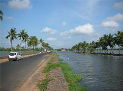
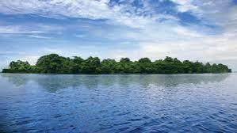
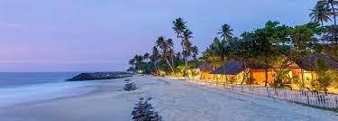
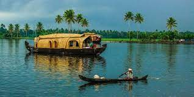

Alappuzha (or Alleppey) is a city on the Laccadive Sea in the southern Indian state of Kerala. It's best known for houseboat cruises along the rustic Kerala backwaters, a network of tranquil canals and lagoons. Alappuzha Beach is the site of the 19th-century Alappuzha Lighthouse. The city's Mullakkal Temple features a traditional design. Punnamada Lake's snake boat races are a well-known annual event.
Pathiramanal is a small island in Muhamma panchayat of Alappuzha district. The name Pathiramanal means 'midnight sand'. The scenic beauty of both sides of the lake as well as that of the island is mind blowing. It is home to many rare varieties of migratory birds from different parts of the world.
Mararikulam is connected by rail and has a railway station by the same name. It is also well connected by road. NH 66 passes through S.L.Puram, which is 5 km to the east of Mararikulam. Nearest airport is Cochin International Airport. It was rated as one of the worlds top five HAMMOCK BEACH by National Geographic survey.
One of the best places to visit in Alleppey is Kuttanad Backwaters. This isn’t a place, it’s a phenomenon. It is a spectacular lagoon, surrounded by the beauty of lakes, rivers, canals, misty mountains and ethereal landscapes.
